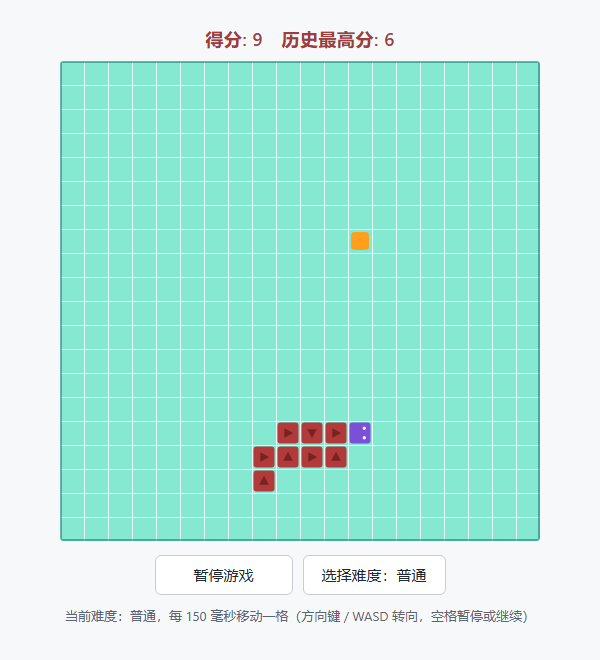
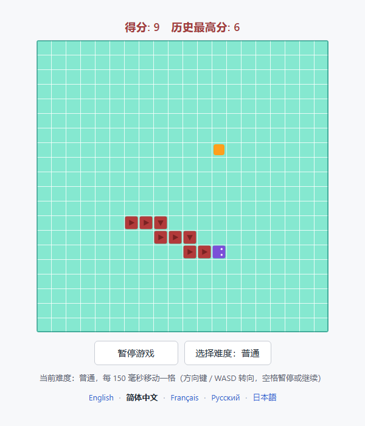

Snake-game Skill
An open-source Agent Skill that makes an AI hand you a snake game you can play the moment it opens.

Play right now
Any phone or any computer — just open this link:
🎮 https://wohui-netizen.github.io/wohui-Snake-game/skills/snake-game/assets/snake-game.html
Documentation site (click a language to switch in place): https://wohui-netizen.github.io/wohui-Snake-game/
Then tap Start Game. On a phone, swipe on the board to steer, tap to pause, or use the on-screen arrow buttons shown under the two buttons.
No installation, no AI, no build step: the game is already in this repository as one single file.
- Open
skills/snake-game/assets/snake-game.html and click Download raw file (or clone the repository).
- Double-click the file you downloaded — it opens in your browser and plays offline.
- Press
Start Game:
| Key / control |
What it does |
← ↑ → ↓ or W A S D |
steer the snake (arrow keys also start the game) |
Space |
pause / resume |
the Difficulty: Normal button |
cycle Easy → Normal → Hard → Insane (further right = faster) |
| the language row under the buttons |
switch the interface between English, 简体中文, Français, Русский, 日本語 |
Eat the orange squares, avoid the walls and your own body, and try to fill the whole board. Your best score is remembered between sessions.
Prefer a URL? Serve the folder and open it in the browser:
cd skills/snake-game/assets
python -m http.server 8000
# then open http://localhost:8000/snake-game.html
1. What problem does this solve?
Writing a snake game that "just works when you double-click it" means getting a long list of fiddly details right at the same time: the timing loop and difficulty speeds, three different endings (hit a wall / hit yourself / fill the board), direction keys that lose input when tapped quickly, a snake that teleports into a wall after you switch tabs and come back, high-score persistence, touch controls, and external assets that break the page the moment you go offline. Ask an AI to generate it from scratch and the result usually looks playable while hiding real bugs.
This project freezes a complete, automated-test-verified implementation into a skill asset, and writes the delivery spec plus an acceptance checklist into SKILL.md: instead of writing from scratch, the AI copies the baseline, changes only what the user asked for, and self-checks item by item before delivering.
- For users: no environment to install, no build step — you get one
index.html that plays on double-click. Customisation touches a handful of documented points and nothing else regresses.
- For the AI: the bar for "done" is that the user can open the page and actually play it — the spec, the end conditions and the checks are written into the skill instead of being improvised.
- Not for: web scraping, PDF or Anki work; and anything needing a backend, online multiplayer or a leaderboard (the skill says so up front; that needs a separate design).
2. Main features
2.1 Skill capabilities
- Fixed delivery spec: score line on top, grid board in the middle, two buttons below, snake/food appearance, difficulty and speed, end conditions, controls and status messages — each written into the spec table in
SKILL.md.
- Five-step workflow: pick the output path → copy
assets/snake-game.html as the baseline → change only what the user named → run the acceptance checklist → report path, how to open it, and what changed.
- Acceptance checklist: three groups checked item by item — structure (single file, no external links, clean console), behaviour (eating, the three endings, turning, pausing, high score, narrow screens) and visuals.
- Five documented change points:
COLORS, DIFFICULTIES, MESSAGES (all UI wording and translations), new SnakeGame(canvas, { cols, rows, cell, difficultyIndex }), and the input layer (KEY_DIRECTIONS and the keydown handler).
- Boundaries: no scraping / PDF / Anki; no frameworks, bundlers or backends.
2.2 The delivered game (measured on the baseline)
| Area |
Feature |
| Delivery form |
A single self-contained HTML file, HTML/CSS/JS fully inline, 0 external references, no build step, plays offline on double-click |
| Board |
20 × 20 cells at 24 px by default (480 × 480 internally, scaled by devicePixelRatio to stay crisp), light teal background + white grid lines + dark border, scales down to narrow viewports |
| Score |
Top line Score: N Best: M, updated live; the best score is written to localStorage (key snake-game:best-score) when a game ends and survives a refresh; degrades without crashing when storage is unavailable |
| Difficulty |
4 levels, faster as difficulty rises: Easy 220, Normal 150, Hard 100, Insane 60 ms per cell, defaulting to Normal; switching mid-game applies immediately and the hint line shows the current speed |
| Languages |
The UI ships in English (default), 简体中文, Français, Русский and 日本語. One click re-labels the whole page instantly, and the choice is remembered in localStorage (key snake-game:language) |
| Endings |
Head hits a wall → loss; head hits its own body → loss (the overlay names the reason and the final score); snake fills every cell → win, and no further food spawns |
| Turning |
Up to 2 turns are buffered (quick double-taps are not lost), 180° reversals are rejected, and the cell the tail has just vacated can be entered |
| Controls |
Arrow keys / WASD to turn, Space to pause or resume, an arrow key starts a game from idle; on touch, swipe to turn, tap to pause, and an on-screen direction pad is shown under the buttons; a focused button does not swallow Space |
| Stability |
At most 4 catch-up steps per frame, so returning to a backgrounded tab never teleports the snake into a wall |
| Accessibility |
Status line announced via role="status" aria-live="polite", keyboard-focusable buttons, labelled canvas |
| Debug hooks |
window.snakeGame (live instance), window.SnakeGame (class), window.SNAKE_DIFFICULTIES, window.SNAKE_LANGUAGES |
3. Installation
Requirements: none. The skill itself is plain text plus one HTML file; playing only needs a modern browser (Chrome / Edge / Firefox / Safari). Optional: any Python 3, if you want to serve the page over HTTP.
Option A: install as an Agent skill
- Copy the whole skill directory into your agent's skills directory:
bash
# The exact target depends on your host; Codex-style tools read skill
# packages from a skills directory, for example.
cp -r skills/snake-game <your-skills-dir>/snake-game
- Reload (or restart) the host so it discovers the new skill.
- Invoke it explicitly, or just describe what you want and let the skill trigger itself:
text
$snake-game generate a snake game I can open and play right away
Option B: no installation
The baseline file inside the skill directory is the complete game — copy it, or open it where it is:
skills/snake-game/assets/snake-game.html
Option C: wire it into any AI manually
Hand SKILL.md to the model as instructions and assets/snake-game.html as the template. No specific host required.
Optional: check that the install is complete
The package follows the Agent Skill layout, so you can validate it with the official skill-creator script (bring your own copy of the script):
python -X utf8 quick_validate.py skills/snake-game
# expected output: Skill is valid!
# On Windows with a non-UTF-8 locale, add -X utf8: the script reads SKILL.md with the default encoding.
The directory should contain SKILL.md, agents/openai.yaml and assets/snake-game.html, with no stray scripts/.
4. Usage
4.1 Generate or customise with the skill
$snake-game generate a snake game I can open and play right away
Adjust the snake game: 16×16 board, 3 difficulty levels, dark theme
Neon colours, bigger cells, 5 difficulty levels, press P to pause
The skill changes only what you name and keeps the rest of the baseline behaviour; the hand-off tells you the file path, how to open it, how to play, and what changed.
4.2 Play the baseline directly
# Option 1: double-click it — no environment needed
skills/snake-game/assets/snake-game.html
# Option 2: serve it over HTTP
cd skills/snake-game/assets
python -m http.server 8000
# then open http://localhost:8000/snake-game.html
How to play: press Start Game, steer with the arrow keys / WASD, press Space to pause or resume, and click Difficulty: Normal to cycle through the levels (you can switch at any time, including mid-game). Use the language row under the buttons to switch the interface between English, 简体中文, Français, Русский and 日本語 — the page starts in English and remembers your choice.
4.3 What to change, and where
| What you want to change |
Where to change it |
| Board size and cell pixel size |
new SnakeGame(canvas, { cols, rows, cell, difficultyIndex }) — the canvas is resized from the cell count at runtime, so the HTML width/height attributes need no hand-editing |
| Difficulty levels, speeds and their names |
DIFFICULTIES (ids and stepMs; smaller is faster) plus the difficulty map inside every language of MESSAGES — the button cycles whatever levels exist, and a missing name falls back to the level id |
| Colours |
COLORS (board, grid lines, border, food, body, head, arrows, eyes) |
| UI wording, or adding a sixth language |
MESSAGES for the text and LANGUAGES for the switcher row |
| Arrow-key mapping and the pause key |
KEY_DIRECTIONS and the keydown handler |
4.4 Debug in the browser console
snakeGame.setDifficulty('insane'); // jump to the fastest level (index also accepted)
snakeGame.setLanguage('ja'); // switch the UI language
snakeGame.tick(); // advance one step by hand
snakeGame.snapshot(); // state, score, snake coordinates, speed, language
snakeGame.render(); // repaint the current position
snakeGame.start(); // start a fresh game
5. Input / output examples
| # |
User input |
Skill output |
| 1 |
"Make me a snake game I can open and play" |
Copies the baseline to index.html with the spec untouched, plus how to open it and how to play |
| 2 |
"16×16 board, 3 difficulty levels, dark theme" (works in any language) |
The same page with 16 rows × 16 columns, 3 speeds (200 / 120 / 70 ms), a dark background and an emerald snake; everything else unchanged |
| 3 |
"Neon colours, bigger cells, 5 difficulty levels, P to pause" |
A 12×12 large-cell board, 5 difficulty levels, a neon palette, P as the pause key (Space still works), and the hint text updated to match |
| 4 |
"Turn the difficulty control into a dropdown and add a restart button" |
The difficulty control and buttons are replaced on the baseline; the rest of the spec stays as it is |
| 5 |
"Scrape a web page for me / produce a PDF / build an Anki deck" |
Explains that this is outside the skill's scope and does not produce a game page |
A typical result for request type 1:
index.html # one self-contained file, double-click to play (~830 lines, 0 external dependencies)
Created index.html (20×20 board, default difficulty "Normal").
To open: double-click it, or run python -m http.server 8000 in this directory and visit http://localhost:8000/
Controls: arrow keys / WASD to turn, Space to pause, click "Difficulty" to cycle levels (Easy 220 → Insane 60 ms per cell).
The interface ships in English by default and switches to 简体中文, Français, Русский or 日本語 from the language row.
No spec changes were made; this matches the baseline.
Request types 2 and 3 only touch the change points listed under "What to change, and where", after which the acceptance checklist is walked through again.
Repository layout
README.md # this file (English, the default)
README.zh-CN.md # 简体中文
README.fr.md # Français
README.ru.md # Русский
README.ja.md # 日本語
index.html # single-page documentation: click a language to re-render in place
LICENSE # MIT licence
skills/snake-game/
├── SKILL.md # English: delivery spec, workflow, acceptance checklist, boundaries
├── SKILL.zh-CN.md # 简体中文
├── SKILL.fr.md # Français
├── SKILL.ru.md # Русский
├── SKILL.ja.md # 日本語
├── agents/openai.yaml # UI metadata: display_name / short_description / default_prompt
└── assets/snake-game.html # the complete runnable baseline game (rendering, score, difficulty, languages, pause, touch, accessibility)
docs/preview.png # preview above (English UI, real browser render)
docs/preview.zh-CN.png # the same board with the Chinese UI
There is no scripts/ inside the skill directory: this task does not need one, and the baseline HTML is itself the template you copy.
Verification
SKILL.md and agents/openai.yaml pass the official skill-creator quick_validate.py (output: Skill is valid!) and also a stricter structural check: main-file line and character budgets, referenced-path existence, metadata fields and empty-directory checks all report 0 errors.- The game logic was exercised with 24 assertions in a real Chromium engine (headless Edge) and 87 assertions under Node with a DOM stub, covering: movement and eating, wall collision, self collision, winning by filling the board, the difficulty-to-speed mapping, reversal rejection, turn buffering, pause and resume, high-score persistence with a safe fallback when storage is unavailable, the catch-up cap after a long stall, and the canvas contents and colours.
- The single-page documentation in
index.html was verified in the same headless browser with 22 assertions: it starts in English, one click re-renders the whole page in place without navigating, the URL hash follows, and the choice is stored and shared with the game.
- The language layer is covered too: the default is English, all five languages render their own labels, switching is instant, the choice survives a reload, and an unknown stored value falls back to English.
- Request types 1, 2 and 3 in the table above were actually generated and re-tested end to end; the preview images are real browser renders.
- Not verified:
localStorage behaviour under file:// varies between browsers (the code degrades instead of throwing).
License
Released under the MIT License: free to use, modify, distribute and use commercially, as long as the copyright and licence notice are kept.
Copyright (c) 2026 Snake-game Skill contributors
To put your own name on it, edit that one line in LICENSE.
Snake-game Skill
一个可开源的 Agent Skill：让 AI 交付一个打开就能玩的贪吃蛇网页游戏。

马上开玩
手机、电脑都能直接打开这个网址：
🎮 https://wohui-netizen.github.io/wohui-Snake-game/skills/snake-game/assets/snake-game.html
文档站（点语言就地切换）：https://wohui-netizen.github.io/wohui-Snake-game/
打开后点「Start Game」。手机上可以滑动转向、轻点暂停，也可以直接点两个按钮下方那排方向键（▲ ◀ ▼ ▶）。
不用安装、不用 AI、不用构建：游戏就是本仓库里的一个文件。
- 打开
skills/snake-game/assets/snake-game.html，点右上角 Download raw file 下载（或者直接克隆仓库）。
- 双击下载到的文件，浏览器就会打开它，断网也能玩。
- 点 「Start Game」（切到中文界面后是「开始游戏」）：
| 操作 |
作用 |
← ↑ → ↓ 或 W A S D |
控制蛇的方向（未开局时按方向键直接开始） |
空格 |
暂停 / 继续 |
Difficulty: Normal 按钮（中文界面为「选择难度：普通」） |
循环切换 简单 → 普通 → 困难 → 地狱，越右越快 |
| 按钮下面那行语言 |
在 English / 简体中文 / Français / Русский / 日本語 之间切换界面 |
吃橙色方块、别撞墙也别撞到自己，试着把整个棋盘填满；历史最高分会记住。
想用网址打开也行：
cd skills/snake-game/assets
python -m http.server 8000
# 浏览器打开 http://localhost:8000/snake-game.html
1. 项目解决什么问题
想要一个「双击就能玩」的贪吃蛇网页，从零写要同时处理一堆容易翻车的细节：计时循环与难度速度、撞墙／撞自己／填满棋盘三种终局、快速连按方向键丢输入、切走标签页再回来蛇直接暴走撞墙、最高分持久化、移动端操作、以及外链资源导致断网打不开。让 AI 每次从零生成，结果往往看起来能跑、实际有坑。
本项目把一份已经跑通并被自动化测试覆盖的完整实现固化成技能资产，把交付规格和验收清单写进 SKILL.md：AI 不再从零写，而是复制基线、只改用户点名的部分、按清单逐条自检后交付。
- 对使用者：不用装环境、不用构建，拿到一个
index.html 双击即玩；改版只动四个改动点，其余行为不回退。
- 对 AI：交付标准是「用户能打开并真的玩起来」——规格、终局判定、验收项都写死在技能里，不靠临场发挥。
- 不适用：网页抓取、PDF、Anki；以及需要后端、联机对战或排行榜的场景（技能会先说明，需另行设计）。
2. 主要功能
2.1 技能能力
- 固定交付规格：顶部计分条、中间网格棋盘、下方两个按钮、蛇／食物外观、难度与速度、终局判定、操作方式、状态提示，逐条写进
SKILL.md 的规格表。
- 五步工作流程：定落点 → 复制
assets/snake-game.html 为基线 → 只改用户点名项 → 按验收清单自检 → 说明路径、打开方式与本次改动。
- 验收清单：结构（单文件、无外链、控制台无报错）、功能（吃食物、三类终局、转向、暂停、最高分、窄屏）、视觉三组逐条核对。
- 五个改动点：
COLORS（配色）、DIFFICULTIES（档位与速度）、MESSAGES 与 LANGUAGES（界面文案与语言行）、new SnakeGame(canvas, { cols, rows, cell, difficultyIndex })（棋盘与默认档位）、输入层（KEY_DIRECTIONS 与 keydown 处理）。
- 边界：不做网页抓取／PDF／Anki；不引入框架、打包器与后端。
2.2 交付游戏（基线实测特性）
| 分类 |
功能 |
| 交付形态 |
单个自包含 HTML 文件，HTML/CSS/JS 全内联，0 个外部引用，无构建步骤，断网双击即玩 |
| 棋盘 |
默认 20 × 20 格、每格 24 px（内部 480 × 480，按 devicePixelRatio 缩放保证清晰），浅青绿底 + 白色网格线 + 深色外框，窄屏按视口宽度自适应 |
| 计分 |
顶部 得分: N 历史最高分: M 实时更新；最高分在游戏结束时写入 localStorage（键 snake-game:best-score），刷新后保留；存储被禁用时降级为不崩溃 |
| 难度 |
4 档，难度越高越快：简单 220、普通 150、困难 100、地狱 60 毫秒／格，默认「普通」，游戏中切换立即生效并在提示行显示当前速度 |
| 语言 |
界面内置 英文（默认）、简体中文、Français、Русский、日本語 五种语言；点按钮下方那一行即可整页即时切换，选择写入 localStorage（键 snake-game:language），刷新后保留，遇到不认识的语言代码回退英文 |
| 终局 |
蛇头撞墙判负、撞到自己判负（覆盖层给出原因与最终得分）、蛇填满全部格子判通关且不再生成食物 |
| 转向 |
最多缓冲 2 次转向（快速连按不丢输入）、禁止 180° 反向掉头、贴着蛇尾的格子在被让出时可正常进入 |
| 操作 |
方向键／WASD 转向，空格暂停／继续，未开局时按方向键直接开始；移动端滑动转向、轻点暂停，并在按钮下方显示屏幕方向键；焦点在按钮上时不会误触发暂停 |
| 稳定性 |
每帧最多补 4 步，切走标签页再回来不会瞬间连走几十格撞墙 |
| 无障碍 |
状态行 role="status" aria-live="polite" 播报、按钮可键盘聚焦、画布带 aria-label |
| 调试钩子 |
window.snakeGame（当前实例）、window.SnakeGame（类）、window.SNAKE_DIFFICULTIES（档位表）、window.SNAKE_LANGUAGES（语言表） |
3. 安装方法
前置要求：无。 技能本体是纯文本 + 一个 HTML 文件；游玩只需要现代浏览器（Chrome / Edge / Firefox / Safari）。可选：任意 Python 3，用于起本地静态服务。
方式 A：安装为 Agent 技能
- 把整个技能目录复制到你所用 Agent 的技能目录下：
bash
# 目标目录以宿主文档为准，例如 Codex 风格的工具读取 skills 目录下的技能包
cp -r skills/snake-game <你的技能目录>/snake-game
- 重新加载（或重启）宿主，让它发现新技能。
- 显式调用，或直接用自然语言描述需求让技能自动触发：
text
$snake-game 生成一个可以直接打开的贪吃蛇网页游戏
方式 B：不安装，直接用
技能目录里的基线文件本身就是完整游戏，复制或直接打开都能玩：
skills/snake-game/assets/snake-game.html
方式 C：手动接入任意 AI
把 SKILL.md 当作指令、assets/snake-game.html 当作模板交给模型即可，不依赖特定宿主。
可选：校验安装是否完整
技能包遵循 Agent Skill 规范，可用官方 skill-creator 的校验脚本自检（脚本需自备）：
python -X utf8 quick_validate.py skills/snake-game
# 期望输出：Skill is valid!
目录应包含：SKILL.md、agents/openai.yaml、assets/snake-game.html，且没有多余的 scripts/。
4. 使用方法
4.1 让技能生成或改版
$snake-game 生成一个可以直接打开的贪吃蛇网页游戏
帮我调整贪吃蛇：16×16 棋盘，难度分 3 档，做成暗色主题
霓虹配色，格子大一点，难度来 5 档，按 P 暂停
技能只改你点名的部分，其余保持基线行为；交付时会给出文件路径、打开方式、玩法与本次改动。
4.2 直接玩基线
# 方式一：双击打开，无需任何环境
skills/snake-game/assets/snake-game.html
# 方式二：起一个本地静态服务
cd skills/snake-game/assets
python -m http.server 8000
# 浏览器打开 http://localhost:8000/snake-game.html
玩法：点 开始游戏 后，用 方向键 / WASD 转向，空格 暂停或继续，点 选择难度：普通 循环切换档位（也可以开局后随时切）。界面默认英文，点按钮下方的语言行可在 English / 简体中文 / Français / Русский / 日本語 之间即时切换，选择会被记住。
4.3 想改什么，改哪里
| 想改的东西 |
改动位置 |
| 棋盘格数与单格像素 |
new SnakeGame(canvas, { cols, rows, cell, difficultyIndex })（画布尺寸运行时按格数重算，无需手改 HTML 的 width/height） |
| 难度档位、速度、档位名称 |
DIFFICULTIES 数组，stepMs 越小越快；增删档位后按钮自动循环 |
| 配色 |
COLORS（棋盘、网格线、外框、食物、蛇身、蛇头、箭头、眼睛） |
| 界面文案、增删语言 |
MESSAGES（各语言文案）与 LANGUAGES（语言行）；新增一门语言＝两边各加一条 |
| 方向键映射、暂停键 |
KEY_DIRECTIONS 与 keydown 处理 |
4.4 在浏览器控制台调试
snakeGame.setDifficulty('insane'); // 切到最快档（也可传档位序号）
snakeGame.setLanguage('ja'); // 切换界面语言
snakeGame.tick(); // 手动走一步
snakeGame.snapshot(); // 查看状态、得分、蛇身坐标、当前速度
snakeGame.render(); // 重绘当前局面
snakeGame.start(); // 重开一局
5. 输入输出示例
| # |
用户输入 |
技能输出 |
| 1 |
「做个贪吃蛇，打开就能玩」 |
把基线复制为 index.html，规格一字不改，附带打开方式与玩法说明 |
| 2 |
「16×16 棋盘，难度分 3 档，做成暗色主题」（英文描述同样适用） |
同一页面改为 16 行 16 列、3 档速度（200 / 120 / 70 毫秒）、深色底 + 青绿蛇身，其余行为不变 |
| 3 |
「霓虹配色，格子大一点，难度来 5 档，按 P 暂停」 |
12×12 大格棋盘、5 档难度、霓虹配色，暂停键改为 P（空格仍可用），提示行文案同步更新 |
| 4 |
「把难度改成下拉框，再加个重新开始按钮」 |
在基线上替换难度控件与按钮，规格其余部分保持不变 |
| 5 |
「帮我抓取某网页数据 / 生成一份 PDF / 做一套 Anki 卡」 |
说明不在本技能范围内，不产出游戏页面 |
第 1 类请求的典型产出：
index.html # 单个自包含文件，双击即可游玩（约 830 行，0 个外部依赖）
已生成 index.html（20×20 棋盘，默认难度「普通」）。
打开方式：直接双击；或在本目录运行 python -m http.server 8000 后访问 http://localhost:8000/
玩法：方向键 / WASD 转向，空格暂停，点「选择难度」切换档位（简单 220 → 地狱 60 毫秒每格）。
本次未改动任何规格，与基线一致。
第 2、3 类请求只会落在上面「想改什么，改哪里」的五个改动点上，改完再逐条过一遍验收清单。
目录结构
README.md # 本文件（英文，默认）
README.zh-CN.md # 简体中文
README.fr.md # Français
README.ru.md # Русский
README.ja.md # 日本語
index.html # 单页文档：点一下语言即时整页切换
LICENSE # MIT 许可证
skills/snake-game/
├── SKILL.md # 英文：交付规格、工作流程、验收清单、边界
├── SKILL.zh-CN.md # 简体中文
├── SKILL.fr.md # Français
├── SKILL.ru.md # Русский
├── SKILL.ja.md # 日本語
├── agents/openai.yaml # UI 元数据：display_name / short_description / default_prompt
└── assets/snake-game.html # 完整可运行的基线游戏（831 行：渲染、计分、难度、五种语言、暂停、移动端、无障碍）
docs/preview.png # 英文界面预览图（真实浏览器渲染）
docs/preview.zh-CN.png # 中文界面预览图
技能目录内没有 scripts/：这个任务不需要脚本，基线 HTML 本身就是可复制的交付模板。
验证情况
SKILL.md 与 agents/openai.yaml 通过官方 skill-creator 的 quick_validate.py（输出 Skill is valid!），并通过更严格的结构校验：主文件行数／字符预算、引用路径存在性、元数据字段、空目录检查全部 0 错误。- 游戏逻辑在真实 Chromium 内核（无头 Edge）跑 24 项断言，另用 Node + DOM 桩跑 87 项断言，覆盖：移动与吃食物、撞墙判负、撞到自己判负、填满棋盘通关、难度与速度映射、禁反向、转向缓冲、暂停与继续、最高分持久化与存储不可用降级、长卡顿不补步、画布绘制内容与配色。
index.html 单页文档同样在无头浏览器里跑了 22 项断言：默认英文，点一下即整页就地切换（不跳转），地址栏 hash 同步更新，选择被记住并与游戏共用。- 语言层同样覆盖：默认为英文，五种语言各自渲染自己的文案，切换即时生效，刷新后保留选择，存储里是不认识的语言代码时回退英文。
- 上表第 1、2、3 类请求都实际生成过页面并逐项复测，全部通过；预览图即真实浏览器渲染结果。
- 未验证项：
localStorage 在 file:// 下的表现随浏览器而异（代码已做降级，不会报错）。
许可证
本项目采用 MIT License：可自由使用、修改、分发与商用，只需保留版权与许可声明。
Copyright (c) 2026 Snake-game Skill contributors
想署自己的名字，改 LICENSE 里的这一行即可。
Skill Snake-game
Un Agent Skill open source qui permet à une IA de vous livrer un jeu de serpent jouable dès l'ouverture.
Jouer tout de suite
Sur n’importe quel téléphone ou ordinateur — ouvrez simplement ce lien :
🎮 https://wohui-netizen.github.io/wohui-Snake-game/skills/snake-game/assets/snake-game.html
Site de documentation (un clic change la langue sur place) : https://wohui-netizen.github.io/wohui-Snake-game/
Appuyez ensuite sur Start Game. Sur téléphone, balayez le plateau pour tourner, touchez pour mettre en pause, ou utilisez la croix directionnelle affichée sous les deux boutons.
Aucune installation, aucune IA, aucune compilation : le jeu est déjà dans ce dépôt, en un seul fichier.
- Ouvrez
skills/snake-game/assets/snake-game.html et cliquez sur Download raw file (ou clonez le dépôt).
- Double-cliquez sur le fichier téléchargé : il s'ouvre dans votre navigateur et fonctionne hors ligne.
- Appuyez sur
Start Game (ou « Jouer » en interface française) :
| Touche / commande |
Effet |
← ↑ → ↓ ou W A S D |
diriger le serpent (une flèche lance aussi la partie) |
Espace |
pause / reprise |
le bouton Difficulty: Normal |
parcourt Facile → Normal → Difficile → Enfer (plus à droite = plus rapide) |
| la ligne de langues sous les boutons |
bascule l'interface entre English, 简体中文, Français, Русский, 日本語 |
Mangez les carrés orange, évitez les murs et votre propre corps, et essayez de remplir tout le plateau. Votre meilleur score est conservé.
Vous préférez une URL ? Servez le dossier puis ouvrez-le dans le navigateur :
cd skills/snake-game/assets
python -m http.server 8000
# puis ouvrez http://localhost:8000/snake-game.html
1. Quel problème cela résout-il ?
Écrire un jeu de serpent qui « fonctionne dès le double-clic » suppose de réussir simultanément une longue liste de détails délicats : la boucle temporelle et les vitesses de difficulté, trois fins différentes (toucher un mur / se mordre soi-même / remplir la grille), des touches directionnelles qui perdent les saisies trop rapides, un serpent qui se téléporte dans un mur après un aller-retour vers un autre onglet, la persistance du meilleur score, les commandes tactiles et des ressources externes qui cassent la page dès que l'on passe hors ligne. Demandez à une IA de le générer de zéro : le résultat semble jouable tout en dissimulant de vrais bugs.
Ce projet fige une implémentation complète, validée par des tests automatisés dans un actif de skill, et consigne la spécification de livraison ainsi qu'une liste de vérification d'acceptation dans SKILL.md : plutôt que d'écrire à partir de zéro, l'IA copie la base, ne modifie que ce que l'utilisateur a demandé et s'auto-contrôle point par point avant de livrer.
- Pour les utilisateurs : aucun environnement à installer, aucune étape de compilation — vous obtenez un seul
index.html qui se lance au double-clic. La personnalisation ne touche qu'une poignée de points documentés et rien d'autre ne régresse.
- Pour l'IA : le critère du « terminé » est que l'utilisateur puisse ouvrir la page et y jouer réellement — la spécification, les conditions de fin et les vérifications sont écrites dans le skill au lieu d'être improvisées.
- Pas pour : le scraping web, les travaux PDF ou Anki ; ni tout ce qui exige un back-end, du multijoueur en ligne ou un classement (le skill le dit d'emblée ; cela demande une conception séparée).
2. Fonctionnalités principales
2.1 Capacités du skill
- Spécification de livraison figée : ligne de score en haut, grille de jeu au centre, deux boutons en dessous, apparence du serpent et de la nourriture, difficulté et vitesse, conditions de fin, commandes et messages d'état — chaque élément étant consigné dans le tableau de spécification de
SKILL.md.
- Flux de travail en cinq étapes : choisir le chemin de sortie → copier
assets/snake-game.html comme base → ne modifier que ce que l'utilisateur a nommé → exécuter la liste de vérification d'acceptation → indiquer le chemin, la façon de l'ouvrir et ce qui a changé.
- Liste de vérification d'acceptation : trois groupes contrôlés point par point — structure (fichier unique, aucun lien externe, console propre), comportement (manger, les trois fins, tourner, mettre en pause, meilleur score, écrans étroits) et visuel.
- Cinq points de modification documentés :
COLORS, DIFFICULTIES, MESSAGES (tous les libellés de l'interface et les traductions), new SnakeGame(canvas, { cols, rows, cell, difficultyIndex }), et la couche de saisie (KEY_DIRECTIONS et le gestionnaire keydown).
- Limites : pas de scraping / PDF / Anki ; pas de frameworks, de bundlers ni de back-end.
2.2 Le jeu livré (mesuré sur la base)
| Domaine |
Fonctionnalité |
| Forme de livraison |
Un fichier HTML unique et autonome, HTML/CSS/JS entièrement en ligne, 0 référence externe, aucune étape de compilation, jouable hors ligne au double-clic |
| Grille |
20 × 20 cellules de 24 px par défaut (480 × 480 en interne, mis à l'échelle par devicePixelRatio pour rester net), fond turquoise clair + lignes de grille blanches + bordure sombre, s'adapte aux fenêtres étroites |
| Score |
Ligne supérieure Score: N Best: M, mise à jour en direct ; le meilleur score est écrit dans localStorage (clé snake-game:best-score) à la fin d'une partie et survit à un rafraîchissement ; se dégrade sans planter lorsque le stockage est indisponible |
| Difficulté |
4 niveaux, de plus en plus rapides : Facile 220, Normal 150, Difficile 100, Enfer 60 ms par cellule, avec Normal par défaut ; un changement en cours de partie s'applique immédiatement et la ligne d'indication affiche la vitesse actuelle |
| Langues |
L'interface est livrée en anglais (par défaut), 简体中文, Français, Русский et 日本語. Un clic réétiquette toute la page instantanément, et le choix est mémorisé dans localStorage (clé snake-game:language) |
| Fins de partie |
La tête touche un mur → défaite ; la tête touche son propre corps → défaite (la surcouche indique la raison et le score final) ; le serpent remplit toutes les cellules → victoire, et aucune autre nourriture n'apparaît |
| Virages |
Jusqu'à 2 virages sont mis en mémoire tampon (les doubles appuis rapides ne sont pas perdus), les demi-tours à 180° sont refusés, et la cellule que la queue vient de libérer reste accessible |
| Commandes |
Flèches / WASD pour tourner, Espace pour mettre en pause ou reprendre, une flèche démarre une partie depuis l'état initial ; au tactile, balayez pour tourner, touchez pour mettre en pause, et une croix directionnelle s'affiche sous les boutons ; un bouton ayant le focus n'avale pas l'Espace |
| Stabilité |
Au plus 4 étapes de rattrapage par image : revenir sur un onglet en arrière-plan ne téléporte donc jamais le serpent dans un mur |
| Accessibilité |
Ligne d'état annoncée via role="status" aria-live="polite", boutons accessibles au clavier, canvas étiqueté |
| Points d'accroche de débogage |
window.snakeGame (instance active), window.SnakeGame (classe), window.SNAKE_DIFFICULTIES, window.SNAKE_LANGUAGES |
3. Installation
Prérequis : aucun. Le skill lui-même est du texte brut plus un fichier HTML ; pour jouer, il suffit d'un navigateur moderne (Chrome / Edge / Firefox / Safari). Facultatif : un Python 3 quelconque, si vous souhaitez servir la page en HTTP.
Option A : installer comme skill d'agent
- Copiez tout le dossier du skill dans le dossier de skills de votre agent :
bash
# The exact target depends on your host; Codex-style tools read skill
# packages from a skills directory, for example.
cp -r skills/snake-game <your-skills-dir>/snake-game
- Rechargez (ou redémarrez) l'hôte pour qu'il découvre le nouveau skill.
- Invoquez-le explicitement, ou décrivez simplement ce que vous voulez et laissez le skill se déclencher :
text
$snake-game generate a snake game I can open and play right away
Option B : aucune installation
Le fichier de base contenu dans le dossier du skill est le jeu complet — copiez-le, ou ouvrez-le là où il se trouve :
skills/snake-game/assets/snake-game.html
Option C : l'intégrer manuellement à n'importe quelle IA
Transmettez SKILL.md au modèle comme instructions et assets/snake-game.html comme modèle de départ. Aucun hôte particulier n'est requis.
Facultatif : vérifier que l'installation est complète
Le paquet suit l'arborescence Agent Skill ; vous pouvez donc le valider avec le script officiel skill-creator (à vous de fournir votre copie du script) :
python -X utf8 quick_validate.py skills/snake-game
# expected output: Skill is valid!
# Sous Windows avec une locale non UTF-8, ajoutez -X utf8 : le script lit SKILL.md avec l'encodage par défaut.
Le dossier doit contenir SKILL.md, agents/openai.yaml et assets/snake-game.html, sans scripts/ superflu.
4. Utilisation
4.1 Générer ou personnaliser avec le skill
$snake-game generate a snake game I can open and play right away
Adjust the snake game: 16×16 board, 3 difficulty levels, dark theme
Neon colours, bigger cells, 5 difficulty levels, press P to pause
Le skill ne modifie que ce que vous nommez et conserve le reste du comportement de la base ; la remise vous indique le chemin du fichier, comment l'ouvrir, comment jouer et ce qui a changé.
4.2 Jouer directement à la base
# Option 1: double-click it — no environment needed
skills/snake-game/assets/snake-game.html
# Option 2: serve it over HTTP
cd skills/snake-game/assets
python -m http.server 8000
# then open http://localhost:8000/snake-game.html
Comment jouer : cliquez sur Jouer, dirigez le serpent avec les flèches / WASD, appuyez sur Espace pour mettre en pause ou reprendre, et cliquez sur Difficulté : Normal pour parcourir les niveaux (vous pouvez changer à tout moment, y compris en cours de partie). Utilisez la rangée de langues sous les boutons pour basculer l'interface entre l'anglais, 简体中文, Français, Русский et 日本語 — la page démarre en anglais et mémorise votre choix.
4.3 Quoi modifier, et où
| Ce que vous voulez modifier |
Où le modifier |
| Taille de la grille et taille en pixels des cellules |
new SnakeGame(canvas, { cols, rows, cell, difficultyIndex }) — le canvas est redimensionné à l'exécution d'après le nombre de cellules, les attributs HTML width/height n'ont donc pas à être modifiés à la main |
| Niveaux de difficulté, vitesses et leurs noms |
DIFFICULTIES (identifiants et stepMs ; plus petit signifie plus rapide) ainsi que la table difficulty de chaque langue dans MESSAGES — le bouton parcourt tous les niveaux existants, et un nom manquant se rabat sur l'identifiant du niveau |
| Couleurs |
COLORS (grille, lignes de grille, bordure, nourriture, corps, tête, flèches, yeux) |
| Libellés de l'interface, ou ajout d'une sixième langue |
MESSAGES pour le texte et LANGUAGES pour la rangée de sélection |
| Correspondance des touches de direction et touche de pause |
KEY_DIRECTIONS et le gestionnaire keydown |
4.4 Déboguer dans la console du navigateur
snakeGame.setDifficulty('insane'); // jump to the fastest level (index also accepted)
snakeGame.setLanguage('ja'); // switch the UI language
snakeGame.tick(); // advance one step by hand
snakeGame.snapshot(); // state, score, snake coordinates, speed, language
snakeGame.render(); // repaint the current position
snakeGame.start(); // start a fresh game
5. Exemples d'entrée / sortie
| # |
Saisie de l'utilisateur |
Sortie du skill |
| 1 |
« Fais-moi un jeu de serpent que je peux ouvrir et auquel je peux jouer » |
Copie la base vers index.html sans toucher à la spécification, avec la façon de l'ouvrir et d'y jouer |
| 2 |
« Grille 16×16, 3 niveaux de difficulté, thème sombre » (fonctionne dans n'importe quelle langue) |
La même page avec 16 lignes × 16 colonnes, 3 vitesses (200 / 120 / 70 ms), un fond sombre et un serpent émeraude ; tout le reste inchangé |
| 3 |
« Couleurs néon, cellules plus grandes, 5 niveaux de difficulté, P pour la pause » |
Une grille 12×12 à grandes cellules, 5 niveaux de difficulté, une palette néon, P comme touche de pause (Espace fonctionne toujours) et le texte d'indication mis à jour en conséquence |
| 4 |
« Transforme le contrôle de difficulté en menu déroulant et ajoute un bouton pour rejouer » |
Le contrôle de difficulté et les boutons sont remplacés sur la base ; le reste de la spécification demeure tel quel |
| 5 |
« Scrape une page web pour moi / produis un PDF / crée un paquet Anki » |
Explique que cela sort du périmètre du skill et ne produit pas de page de jeu |
Un résultat typique pour une demande de type 1 :
index.html # one self-contained file, double-click to play (~830 lines, 0 external dependencies)
Created index.html (20×20 board, default difficulty "Normal").
To open: double-click it, or run python -m http.server 8000 in this directory and visit http://localhost:8000/
Controls: arrow keys / WASD to turn, Space to pause, click "Difficulty" to cycle levels (Easy 220 → Insane 60 ms per cell).
The interface ships in English by default and switches to 简体中文, Français, Русский or 日本語 from the language row.
No spec changes were made; this matches the baseline.
Les demandes de type 2 et 3 ne touchent que les points de modification listés dans « Quoi modifier, et où », après quoi la liste de vérification d'acceptation est parcourue à nouveau.
Arborescence du dépôt
README.md # this file (English, the default)
README.zh-CN.md # 简体中文
README.fr.md # Français
README.ru.md # Русский
README.ja.md # 日本語
index.html # single-page documentation: click a language to re-render in place
LICENSE # MIT licence
skills/snake-game/
├── SKILL.md # English: delivery spec, workflow, acceptance checklist, boundaries
├── SKILL.zh-CN.md # 简体中文
├── SKILL.fr.md # Français
├── SKILL.ru.md # Русский
├── SKILL.ja.md # 日本語
├── agents/openai.yaml # UI metadata: display_name / short_description / default_prompt
└── assets/snake-game.html # the complete runnable baseline game (rendering, score, difficulty, languages, pause, touch, accessibility)
docs/preview.png # preview above (English UI, real browser render)
docs/preview.zh-CN.png # the same board with the Chinese UI
Il n'y a pas de scripts/ dans le dossier du skill : cette tâche n'en a pas besoin, et le HTML de base est lui-même le modèle que vous copiez.
Vérification
SKILL.md et agents/openai.yaml passent le quick_validate.py officiel de skill-creator (sortie : Skill is valid!) ainsi qu'un contrôle structurel plus strict : budgets de lignes et de caractères du fichier principal, existence des chemins référencés, champs de métadonnées et vérification des dossiers vides ne signalent aucune erreur.- La logique du jeu a été éprouvée par 24 assertions dans un vrai moteur Chromium (Edge sans interface graphique) et 87 assertions sous Node avec un simulacre de DOM, couvrant : le déplacement et l'ingestion, la collision avec un mur, la collision avec soi-même, la victoire en remplissant la grille, la correspondance difficulté-vitesse, le refus des demi-tours, la mise en mémoire tampon des virages, la pause et la reprise, la persistance du meilleur score avec un repli sûr lorsque le stockage est indisponible, le plafond de rattrapage après une longue interruption, ainsi que le contenu et les couleurs du canvas.
- La documentation d'une seule page (
index.html) a été vérifiée dans le même navigateur sans interface avec 22 assertions : elle démarre en anglais, un clic réaffiche toute la page sur place sans navigation, le fragment d'URL suit, et le choix est mémorisé et partagé avec le jeu.
- La couche linguistique est également couverte : l'anglais est la langue par défaut, les cinq langues affichent leurs propres libellés, le changement est instantané, le choix survit à un rechargement et une valeur stockée inconnue se rabat sur l'anglais.
- Les demandes de type 1, 2 et 3 du tableau ci-dessus ont réellement été générées et retestées de bout en bout ; les images d'aperçu sont de vrais rendus de navigateur.
- Non vérifié : le comportement de
localStorage sous file:// varie selon les navigateurs (le code se dégrade au lieu de lever une exception).
Licence
Publié sous MIT License : libre d'utilisation, de modification, de distribution et d'usage commercial, tant que l'avis de copyright et de licence est conservé.
Copyright (c) 2026 Snake-game Skill contributors
Pour y mettre votre propre nom, modifiez cette ligne dans LICENSE.
Snake-game Skill
Открытый Agent Skill, благодаря которому ИИ выдаёт вам игру «змейка», в которую можно играть сразу после открытия файла.
Играть сразу
С любого телефона или компьютера — просто откройте эту ссылку:
🎮 https://wohui-netizen.github.io/wohui-Snake-game/skills/snake-game/assets/snake-game.html
Сайт документации (щелчок переключает язык на месте): https://wohui-netizen.github.io/wohui-Snake-game/
Затем нажмите Start Game. На телефоне смахивайте по полю, чтобы поворачивать, касайтесь для паузы или пользуйтесь экранными стрелками под двумя кнопками.
Ничего устанавливать не нужно — ни ИИ, ни сборки: игра уже лежит в этом репозитории одним файлом.
- Откройте
skills/snake-game/assets/snake-game.html и нажмите Download raw file (или клонируйте репозиторий).
- Дважды щёлкните скачанный файл — он откроется в браузере и работает без интернета.
- Нажмите
Start Game (в русском интерфейсе — «Начать игру»):
| Клавиши / элемент |
Действие |
← ↑ → ↓ или W A S D |
управлять змейкой (стрелка также начинает игру) |
Пробел |
пауза / продолжить |
кнопка Difficulty: Normal |
перебирает Легко → Обычно → Сложно → Ад (правее — быстрее) |
| строка языков под кнопками |
переключает интерфейс: English, 简体中文, Français, Русский, 日本語 |
Съедайте оранжевые квадраты, не врезайтесь в стены и в себя, попробуйте заполнить всё поле. Рекорд сохраняется.
Хотите по ссылке? Поднимите локальный сервер и откройте страницу:
cd skills/snake-game/assets
python -m http.server 8000
# затем откройте http://localhost:8000/snake-game.html
1. Какую задачу это решает?
Написать «змейку», которая «просто работает по двойному щелчку», — значит одновременно уладить длинный список мелких деталей: цикл по времени и скорости уровней сложности, три разных финала (удар в стену / удар в себя / заполнение поля), клавиши направления, которые теряют ввод при быстром нажатии, змейка, телепортирующаяся в стену после переключения вкладки и возвращения, сохранение рекорда, сенсорное управление и внешние ресурсы, из-за которых страница ломается, стоит оказаться офлайн. Попросите ИИ сгенерировать всё с нуля — и результат обычно выглядит играбельным, скрывая настоящие ошибки.
Этот проект фиксирует полную реализацию, проверенную автоматическими тестами, в виде ресурса навыка и переносит спецификацию поставки вместе с чек-листом приёмки в SKILL.md: вместо написания с нуля ИИ копирует базовую версию, меняет только то, что просил пользователь, и проверяет себя по пунктам перед выдачей результата.
- Для пользователей: ничего устанавливать и собирать не нужно — вы получаете один
index.html, который играется по двойному щелчку. Кастомизация затрагивает несколько документированных точек, а всё остальное не ломается.
- Для ИИ: критерий «готово» — пользователь может открыть страницу и действительно играть; спецификация, условия окончания и проверки записаны в навык, а не придумываются на ходу.
- Не для: веб-скрапинга, работы с PDF или Anki; а также всего, что требует бэкенда, сетевой игры или таблицы лидеров (навык прямо об этом предупреждает; для такого нужен отдельный проект).
2. Основные возможности
2.1 Возможности навыка
- Жёсткая спецификация поставки: строка счёта сверху, сеточное поле посередине, две кнопки снизу, внешний вид змейки и еды, сложность и скорость, условия окончания, управление и сообщения о состоянии — всё записано в таблицу спецификации в
SKILL.md.
- Процесс из пяти шагов: выбрать путь вывода → скопировать
assets/snake-game.html как основу → изменить только то, что назвал пользователь → пройти чек-лист приёмки → сообщить путь, способ открытия и список изменений.
- Чек-лист приёмки: три группы, проверяемые по пунктам, — структура (один файл, никаких внешних ссылок, чистая консоль), поведение (поедание, три финала, повороты, пауза, рекорд, узкие экраны) и визуальная часть.
- Пять документированных точек изменений:
COLORS, DIFFICULTIES, MESSAGES (все тексты интерфейса и переводы), new SnakeGame(canvas, { cols, rows, cell, difficultyIndex }) и слой ввода (KEY_DIRECTIONS и обработчик keydown).
- Границы применимости: никакого скрапинга / PDF / Anki; никаких фреймворков, сборщиков и бэкенда.
2.2 Игра, которую вы получаете (измерено на базовой версии)
| Область |
Возможность |
| Форма поставки |
Один самодостаточный HTML-файл, HTML/CSS/JS полностью внутри, 0 внешних ссылок, без сборки, играется офлайн по двойному щелчку |
| Поле |
20 × 20 клеток по 24 px по умолчанию (480 × 480 внутри, масштабируется через devicePixelRatio, чтобы оставаться чётким), светло-бирюзовый фон + белые линии сетки + тёмная рамка, уменьшается на узких экранах |
| Счёт |
Верхняя строка Score: N Best: M, обновляется на ходу; рекорд записывается в localStorage (ключ snake-game:best-score) в конце игры и переживает перезагрузку; при недоступности хранилища деградирует, но не падает |
| Сложность |
4 уровня, чем выше сложность, тем быстрее: Легко 220, Обычно 150, Сложно 100, Ад 60 мс на клетку, по умолчанию Обычно; переключение по ходу игры применяется сразу, а строка-подсказка показывает текущую скорость |
| Языки |
Интерфейс поставляется на английском (по умолчанию), 简体中文, Français, Русский и 日本語. Один щелчок мгновенно переподписывает всю страницу, а выбор запоминается в localStorage (ключ snake-game:language) |
| Финалы |
Голова ударяется о стену → проигрыш; голова ударяется о собственное тело → проигрыш (оверлей называет причину и показывает итоговый счёт); змейка заполняет все клетки → победа, и новая еда больше не появляется |
| Повороты |
Буферизуется до 2 поворотов (быстрые двойные нажатия не теряются), развороты на 180° отклоняются, а в клетку, которую только что покинул хвост, войти можно |
| Управление |
Стрелки / WASD для поворота, Space для паузы или продолжения, нажатие стрелки запускает игру из простоя; на сенсорных экранах свайп поворачивает, касание ставит паузу, а под кнопками показан экранный блок стрелок; кнопка в фокусе не перехватывает Space |
| Устойчивость |
Не более 4 догоняющих шагов за кадр, поэтому возвращение на свёрнутую вкладку никогда не телепортирует змейку в стену |
| Доступность |
Строка состояния объявляется через role="status" aria-live="polite", кнопки доступны с клавиатуры, у canvas есть подпись |
| Отладочные хуки |
window.snakeGame (живой экземпляр), window.SnakeGame (класс), window.SNAKE_DIFFICULTIES, window.SNAKE_LANGUAGES |
3. Установка
Требования: нет. Сам навык — это обычный текст плюс один HTML-файл; для игры нужен лишь современный браузер (Chrome / Edge / Firefox / Safari). Необязательно: любой Python 3, если вы хотите отдавать страницу по HTTP.
Вариант A: установка как навыка агента
- Скопируйте весь каталог навыка в каталог навыков вашего агента:
bash
# Точный путь назначения зависит от вашей платформы; инструменты
# в стиле Codex читают пакеты навыков из каталога skills.
cp -r skills/snake-game <your-skills-dir>/snake-game
- Перезагрузите (или перезапустите) платформу, чтобы она обнаружила новый навык.
- Вызовите навык явно — или просто опишите, что вам нужно, и позвольте ему сработать самому:
text
$snake-game generate a snake game I can open and play right away
Вариант B: без установки
Базовый файл внутри каталога навыка и есть готовая игра — скопируйте его или откройте на месте:
skills/snake-game/assets/snake-game.html
Вариант C: подключить к любому ИИ вручную
Передайте модели SKILL.md как инструкции, а assets/snake-game.html — как шаблон. Конкретная платформа не требуется.
Необязательно: проверить, что установка полная
Пакет соответствует раскладке Agent Skill, поэтому его можно проверить официальным скриптом skill-creator (свою копию скрипта нужно взять отдельно):
python -X utf8 quick_validate.py skills/snake-game
# expected output: Skill is valid!
# В Windows с локалью, отличной от UTF-8, добавьте -X utf8: скрипт читает SKILL.md в кодировке по умолчанию.
В каталоге должны быть SKILL.md, agents/openai.yaml и assets/snake-game.html — и никаких лишних scripts/.
4. Использование
4.1 Генерация или кастомизация с помощью навыка
$snake-game generate a snake game I can open and play right away
Adjust the snake game: 16×16 board, 3 difficulty levels, dark theme
Neon colours, bigger cells, 5 difficulty levels, press P to pause
Навык меняет только то, что вы назвали, и сохраняет остальное поведение базовой версии; в ответе вы получаете путь к файлу, способ его открыть, правила игры и список изменений.
4.2 Играть в базовую версию напрямую
# Option 1: double-click it — no environment needed
skills/snake-game/assets/snake-game.html
# Option 2: serve it over HTTP
cd skills/snake-game/assets
python -m http.server 8000
# then open http://localhost:8000/snake-game.html
Как играть: нажмите Начать игру, управляйте стрелками / WASD, нажимайте Space для паузы или продолжения и щёлкайте Сложность: Обычно, чтобы перебирать уровни (переключать можно в любой момент, в том числе по ходу игры). Строка языков под кнопками переключает интерфейс между английским, 简体中文, Français, Русский и 日本語 — страница открывается на английском и запоминает ваш выбор.
4.3 Что и где менять
| Что вы хотите изменить |
Где это менять |
| Размер поля и размер клетки в пикселях |
new SnakeGame(canvas, { cols, rows, cell, difficultyIndex }) — canvas изменяет размер по числу клеток во время выполнения, поэтому атрибуты width/height в HTML править вручную не нужно |
| Уровни сложности, скорости и их названия |
DIFFICULTIES (идентификаторы и stepMs; меньше — быстрее) плюс карта difficulty внутри каждого языка в MESSAGES — кнопка перебирает все существующие уровни, а при отсутствии названия используется идентификатор уровня |
| Цвета |
COLORS (поле, линии сетки, рамка, еда, тело, голова, стрелки, глаза) |
| Тексты интерфейса или добавление шестого языка |
MESSAGES для текста и LANGUAGES для строки переключателя |
| Соответствие стрелок клавишам и клавиша паузы |
KEY_DIRECTIONS и обработчик keydown |
4.4 Отладка в консоли браузера
snakeGame.setDifficulty('insane'); // jump to the fastest level (index also accepted)
snakeGame.setLanguage('ja'); // switch the UI language
snakeGame.tick(); // advance one step by hand
snakeGame.snapshot(); // state, score, snake coordinates, speed, language
snakeGame.render(); // repaint the current position
snakeGame.start(); // start a fresh game
5. Примеры ввода и вывода
| # |
Запрос пользователя |
Результат работы навыка |
| 1 |
«Сделай мне змейку, которую можно открыть и сразу играть» |
Копирует базовую версию в index.html без изменений спецификации, а также рассказывает, как открыть файл и как играть |
| 2 |
«Поле 16×16, 3 уровня сложности, тёмная тема» (работает на любом языке) |
Та же страница с 16 строками × 16 столбцами, 3 скоростями (200 / 120 / 70 мс), тёмным фоном и изумрудной змейкой; всё остальное без изменений |
| 3 |
«Неоновые цвета, клетки побольше, 5 уровней сложности, пауза на P» |
Поле 12×12 с крупными клетками, 5 уровней сложности, неоновая палитра, клавиша P для паузы (Space по-прежнему работает) и обновлённая строка-подсказка |
| 4 |
«Сделай выбор сложности выпадающим списком и добавь кнопку перезапуска» |
Элемент выбора сложности и кнопки заменяются поверх базовой версии; остальная спецификация остаётся прежней |
| 5 |
«Собери мне данные с веб-страницы / сделай PDF / собери колоду Anki» |
Объясняет, что это вне рамок навыка, и не создаёт игровую страницу |
Типичный результат для запроса типа 1:
index.html # one self-contained file, double-click to play (~830 lines, 0 external dependencies)
Created index.html (20×20 board, default difficulty "Normal").
To open: double-click it, or run python -m http.server 8000 in this directory and visit http://localhost:8000/
Controls: arrow keys / WASD to turn, Space to pause, click "Difficulty" to cycle levels (Easy 220 → Insane 60 ms per cell).
The interface ships in English by default and switches to 简体中文, Français, Русский or 日本語 from the language row.
No spec changes were made; this matches the baseline.
Запросы типов 2 и 3 затрагивают только точки изменений, перечисленные в разделе «Что и где менять», после чего чек-лист приёмки проходится заново.
Состав репозитория
README.md # this file (English, the default)
README.zh-CN.md # 简体中文
README.fr.md # Français
README.ru.md # Русский
README.ja.md # 日本語
index.html # single-page documentation: click a language to re-render in place
LICENSE # MIT licence
skills/snake-game/
├── SKILL.md # English: delivery spec, workflow, acceptance checklist, boundaries
├── SKILL.zh-CN.md # 简体中文
├── SKILL.fr.md # Français
├── SKILL.ru.md # Русский
├── SKILL.ja.md # 日本語
├── agents/openai.yaml # UI metadata: display_name / short_description / default_prompt
└── assets/snake-game.html # the complete runnable baseline game (rendering, score, difficulty, languages, pause, touch, accessibility)
docs/preview.png # preview above (English UI, real browser render)
docs/preview.zh-CN.png # the same board with the Chinese UI
Внутри каталога навыка нет scripts/: этой задаче он не нужен, а сам базовый HTML и есть шаблон, который вы копируете.
Проверка
SKILL.md и agents/openai.yaml проходят официальный quick_validate.py от skill-creator (вывод: Skill is valid!), а также более строгую структурную проверку: лимиты строк и символов основного файла, существование упомянутых путей, поля метаданных и пустые каталоги — 0 ошибок.- Игровая логика была проверена 24 утверждениями в настоящем движке Chromium (headless Edge) и 87 утверждениями под Node с заглушкой DOM, охватывающими: движение и поедание, столкновение со стеной, столкновение с собой, победу при заполнении поля, соответствие сложности и скорости, отклонение разворота, буферизацию поворотов, паузу и продолжение, сохранение рекорда с безопасным откатом при недоступности хранилища, ограничение догоняющих шагов после долгой задержки, а также содержимое и цвета canvas.
- Документация на одной странице (
index.html) проверена в том же headless-браузере 22 утверждениями: по умолчанию английский, один щелчок перерисовывает страницу на месте без перехода, хэш в адресной строке обновляется, выбор запоминается и общий с игрой.
- Языковой слой тоже покрыт: по умолчанию английский, все пять языков выводят собственные подписи, переключение мгновенное, выбор переживает перезагрузку, а неизвестное сохранённое значение откатывается к английскому.
- Запросы типов 1, 2 и 3 из таблицы выше действительно генерировались и повторно тестировались от начала до конца; изображения превью — настоящие отрисовки браузера.
- Не проверено: поведение
localStorage при file:// различается в разных браузерах (код деградирует, а не выбрасывает исключение).
Лицензия
Распространяется по лицензии MIT: свободно используйте, изменяйте, распространяйте и применяйте в коммерческих целях, если сохраняете уведомление об авторских правах и лицензии.
Copyright (c) 2026 Snake-game Skill contributors
Чтобы указать собственное имя, отредактируйте эту одну строку в LICENSE.
Snake-game Skill
オープンソースの Agent Skill です。AI が開いた瞬間に遊べるスネークゲームを渡してくれるようにします。
すぐに遊ぶ
スマートフォンでもパソコンでも、このリンクを開くだけ：
🎮 https://wohui-netizen.github.io/wohui-Snake-game/skills/snake-game/assets/snake-game.html
ドキュメントサイト（クリックでその場で言語切替）：https://wohui-netizen.github.io/wohui-Snake-game/
開いたら Start Game を押します。スマートフォンでは盤面をスワイプして方向転換、タップで一時停止、または 2 つのボタンの下に表示される方向キーも使えます。
インストールも AI もビルドも不要です。ゲームはこのリポジトリに1 つのファイルとしてすでに入っています。
skills/snake-game/assets/snake-game.html を開き、右上の Download raw file をクリックします（リポジトリを clone しても同じです）。- ダウンロードしたファイルをダブルクリックするとブラウザで開き、オフラインでも遊べます。
Start Game（日本語界面では「ゲーム開始」）を押します：
| キー / 操作 |
動作 |
← ↑ → ↓ または W A S D |
スネークの向き（矢印キーでそのまま開始） |
スペース |
一時停止 / 再開 |
Difficulty: Normal ボタン |
かんたん → ふつう → むずかしい → 地獄 を順に切替（右ほど速い） |
| ボタンの下の言語行 |
English / 简体中文 / Français / Русский / 日本語 を切替 |
オレンジのマスを食べ、壁と自分の体を避け、盤面を埋めるのを目指します。最高スコアは保存されます。
URL で開きたい場合はローカルサーバーを立てます：
cd skills/snake-game/assets
python -m http.server 8000
# ブラウザで http://localhost:8000/snake-game.html を開く
1. 何を解決するのか
「ダブルクリックすればそのまま動く」スネークゲームを書くには、細かくて厄介な点を同時に押さえる必要があります。タイマーループと難易度ごとの速度、3 通りの終わり方（壁に衝突／自分に衝突／盤面を埋める）、素早く連打すると入力が抜ける方向キー、タブを切り替えて戻ると蛇が壁までワープする問題、最高スコアの永続化、タッチ操作、そしてオフラインになった瞬間にページが壊れる外部アセット。AI にゼロから生成させると、遊べそうに見えるのに実際にはバグが潜んでいる、という結果になりがちです。
本プロジェクトは、自動テストで検証済みの完全な実装をスキル資産として固定し、交付仕様と受け入れチェックリストを SKILL.md に書き込みました。AI はゼロから書くのではなく、ベースラインをコピーし、ユーザーが指定した箇所だけを変更し、交付前にチェックリストで項目ごとに自己点検します。
- 利用者の方へ: 環境構築もビルドも不要です。ダブルクリックで遊べる
index.html が 1 つ手に入ります。カスタマイズはドキュメント化された変更点だけを触ればよく、それ以外の挙動は退行しません。
- AI へ:「完了」の基準は、ユーザーがページを開いて実際に遊べることです。仕様・終了条件・チェック項目はその場の判断ではなく、スキル内に書き込まれています。
- 対象外: Web スクレイピング、PDF、Anki 関連。また、バックエンドやオンライン対戦、ランキングが必要なもの（スキルが冒頭で明示します。別途設計が必要です）。
2. 主な機能
2.1 スキルの機能
- 固定の交付仕様: 上部のスコア行、中央のグリッド盤面、下部の 2 つのボタン、蛇と餌の見た目、難易度と速度、終了条件、操作方法、ステータスメッセージを、それぞれ
SKILL.md の仕様表に記載しています。
- 5 ステップのワークフロー: 出力先を決める →
assets/snake-game.html をベースラインとしてコピーする → ユーザーが指定した箇所だけを変更する → 受け入れチェックリストを実行する → パス、開き方、変更内容を報告する。
- 受け入れチェックリスト: 構造（単一ファイル、外部リンクなし、コンソールがクリーン）、挙動（餌を食べる、3 通りの終わり方、旋回、一時停止、最高スコア、狭い画面）、見た目の 3 グループを項目ごとに確認します。
- ドキュメント化された 5 つの変更点:
COLORS、DIFFICULTIES、MESSAGES（UI の文言と翻訳すべて）、new SnakeGame(canvas, { cols, rows, cell, difficultyIndex })、入力レイヤー（KEY_DIRECTIONS と keydown ハンドラー）。
- 境界: スクレイピング／PDF／Anki は行いません。フレームワーク、バンドラー、バックエンドも導入しません。
2.2 交付されるゲーム（ベースラインでの実測値）
| 分類 |
機能 |
| 交付形態 |
単一の自己完結型 HTML ファイル。HTML/CSS/JS はすべてインラインで、外部参照 0 件、ビルド手順なし、オフラインでもダブルクリックで遊べます |
| 盤面 |
既定では 20 × 20 マス、1 マス 24 px（内部は 480 × 480 で、devicePixelRatio により拡大縮小して鮮明さを維持）。薄い青緑の背景 + 白いグリッド線 + 濃い枠線で、狭いビューポートにも縮小して収まります |
| スコア |
上部の行は スコア: N 最高スコア: M でリアルタイムに更新されます。最高スコアはゲーム終了時に localStorage（キー snake-game:best-score）へ書き込まれ、リロード後も保持されます。ストレージが利用できない場合もクラッシュせずに縮退します |
| 難易度 |
4 段階で、難易度が上がるほど高速です。かんたん 220、ふつう 150、むずかしい 100、地獄 60 ミリ秒／マス。既定はふつうで、ゲーム中に切り替えると即座に反映され、ヒント行に現在の速度が表示されます |
| 言語 |
UI は英語（既定）、简体中文、Français、Русский、日本語に対応しています。ワンクリックでページ全体のラベルが即座に切り替わり、選択は localStorage（キー snake-game:language）に記憶されます |
| 終了条件 |
頭が壁に衝突 → 敗北。頭が自分の胴体に衝突 → 敗北（オーバーレイに理由と最終スコアを表示）。蛇がすべてのマスを埋める → 勝利で、以降は餌が出現しません |
| 旋回 |
最大 2 回の旋回をバッファリングし（素早い二度押しでも入力が抜けません）、180° の反転は拒否され、しっぽが直前まで占めていたマスには進入できます |
| 操作 |
方向キー／WASD で旋回、Space で一時停止または再開、待機中は方向キーでゲームが始まります。タッチではスワイプで旋回、タップで一時停止し、ボタンの下に画面用の方向キーも表示されます。フォーカス中のボタンが Space を奪うことはありません |
| 安定性 |
1 フレームあたりの追いつき処理は最大 4 ステップなので、バックグラウンドのタブから戻っても蛇が壁までワープしません |
| アクセシビリティ |
ステータス行は role="status" aria-live="polite" で通知され、ボタンはキーボードでフォーカス可能、キャンバスにはラベルがあります |
| デバッグフック |
window.snakeGame（実行中のインスタンス）、window.SnakeGame（クラス）、window.SNAKE_DIFFICULTIES、window.SNAKE_LANGUAGES |
3. インストール
必要なもの: ありません。 スキル自体はプレーンテキストと 1 つの HTML ファイルです。遊ぶにはモダンなブラウザー（Chrome / Edge / Firefox / Safari）だけが必要です。任意で、ページを HTTP で配信したい場合は任意の Python 3 をご利用ください。
方法 A: Agent スキルとしてインストールする
- スキルディレクトリ全体を、お使いのエージェントのスキルディレクトリへコピーします:
bash
# The exact target depends on your host; Codex-style tools read skill
# packages from a skills directory, for example.
cp -r skills/snake-game <your-skills-dir>/snake-game
- ホストを再読み込み（または再起動）して、新しいスキルを認識させます。
- 明示的に呼び出すか、ご希望の内容をそのまま伝えてスキルを自動的に発動させます:
text
$snake-game generate a snake game I can open and play right away
方法 B: インストールしない
スキルディレクトリ内のベースラインファイルが、そのまま完全なゲームです。コピーするか、その場で開いてください:
skills/snake-game/assets/snake-game.html
方法 C: 任意の AI に手動で組み込む
SKILL.md を指示として、assets/snake-game.html をテンプレートとしてモデルに渡します。特定のホストは必要ありません。
任意: インストールが完全か確認する
このパッケージは Agent Skill のレイアウトに従っているため、公式の skill-creator スクリプトで検証できます（スクリプトはご自身でご用意ください）:
python -X utf8 quick_validate.py skills/snake-game
# expected output: Skill is valid!
# 非 UTF-8 ロケールの Windows では -X utf8 を付けてください。スクリプトは SKILL.md を既定のエンコーディングで読み込みます。
ディレクトリには SKILL.md、agents/openai.yaml、assets/snake-game.html が含まれ、余計な scripts/ は存在しない状態にしてください。
4. 使い方
4.1 スキルで生成・カスタマイズする
$snake-game generate a snake game I can open and play right away
Adjust the snake game: 16×16 board, 3 difficulty levels, dark theme
Neon colours, bigger cells, 5 difficulty levels, press P to pause
スキルは指定された箇所だけを変更し、ベースラインのその他の挙動は維持します。引き渡し時には、ファイルパス、開き方、遊び方、変更内容をお伝えします。
4.2 ベースラインをそのまま遊ぶ
# Option 1: double-click it — no environment needed
skills/snake-game/assets/snake-game.html
# Option 2: serve it over HTTP
cd skills/snake-game/assets
python -m http.server 8000
# then open http://localhost:8000/snake-game.html
遊び方: ゲーム開始 を押し、方向キー／WASD で操作します。Space を押すと一時停止または再開し、難易度: ふつう をクリックすると段階が順に切り替わります（ゲーム中を含め、いつでも切り替えられます）。ボタンの下の言語行を使うと、インターフェースを英語、简体中文、Français、Русский、日本語の間で切り替えられます。ページは英語で起動し、選択内容を記憶します。
4.3 何をどこで変更するか
| 変更したい内容 |
変更箇所 |
| 盤面の大きさと 1 マスのピクセル数 |
new SnakeGame(canvas, { cols, rows, cell, difficultyIndex }) — キャンバスは実行時にマス数からサイズが決まるため、HTML の width/height 属性を手で編集する必要はありません |
| 難易度の段階、速度、その名称 |
DIFFICULTIES（id と stepMs。小さいほど高速）と、MESSAGES の各言語内にある difficulty マップ — ボタンは存在する段階をすべて循環し、名称が欠けている場合は段階の id にフォールバックします |
| 配色 |
COLORS（盤面、グリッド線、枠線、餌、胴体、頭、矢印、目） |
| UI の文言、または 6 つ目の言語の追加 |
テキストは MESSAGES、切り替え行は LANGUAGES |
| 方向キーの割り当てと一時停止キー |
KEY_DIRECTIONS と keydown ハンドラー |
4.4 ブラウザーコンソールでデバッグする
snakeGame.setDifficulty('insane'); // jump to the fastest level (index also accepted)
snakeGame.setLanguage('ja'); // switch the UI language
snakeGame.tick(); // advance one step by hand
snakeGame.snapshot(); // state, score, snake coordinates, speed, language
snakeGame.render(); // repaint the current position
snakeGame.start(); // start a fresh game
5. 入出力の例
| # |
ユーザーの入力 |
スキルの出力 |
| 1 |
「開いてすぐ遊べるスネークゲームを作って」 |
仕様を変えずにベースラインを index.html へコピーし、開き方と遊び方を添えて渡します |
| 2 |
「16×16 の盤面、難易度 3 段階、ダークテーマ」（どの言語でも可） |
同じページを 16 行 × 16 列、速度 3 段階（200 / 120 / 70 ミリ秒）、暗い背景とエメラルド色の蛇に変更します。それ以外は変更しません |
| 3 |
「ネオンカラー、マスを大きく、難易度 5 段階、P で一時停止」 |
12×12 の大きなマスの盤面、難易度 5 段階、ネオンの配色、一時停止キーを P に変更（Space も引き続き有効）し、ヒントの文言も合わせて更新します |
| 4 |
「難易度の操作をドロップダウンにして、もう一度ボタンを追加して」 |
ベースライン上で難易度の操作とボタンを置き換えます。仕様のその他の部分はそのままです |
| 5 |
「Web ページをスクレイピングして／PDF を作って／Anki デッキを作って」 |
スキルの範囲外であることを説明し、ゲームページは生成しません |
リクエスト 1 の典型的な結果:
index.html # one self-contained file, double-click to play (~830 lines, 0 external dependencies)
Created index.html (20×20 board, default difficulty "Normal").
To open: double-click it, or run python -m http.server 8000 in this directory and visit http://localhost:8000/
Controls: arrow keys / WASD to turn, Space to pause, click "Difficulty" to cycle levels (Easy 220 → Insane 60 ms per cell).
The interface ships in English by default and switches to 简体中文, Français, Русский or 日本語 from the language row.
No spec changes were made; this matches the baseline.
リクエスト 2 と 3 では、「何をどこで変更するか」に挙げた変更点だけを触り、その後に受け入れチェックリストをもう一度通します。
リポジトリ構成
README.md # this file (English, the default)
README.zh-CN.md # 简体中文
README.fr.md # Français
README.ru.md # Русский
README.ja.md # 日本語
index.html # single-page documentation: click a language to re-render in place
LICENSE # MIT licence
skills/snake-game/
├── SKILL.md # English: delivery spec, workflow, acceptance checklist, boundaries
├── SKILL.zh-CN.md # 简体中文
├── SKILL.fr.md # Français
├── SKILL.ru.md # Русский
├── SKILL.ja.md # 日本語
├── agents/openai.yaml # UI metadata: display_name / short_description / default_prompt
└── assets/snake-game.html # the complete runnable baseline game (rendering, score, difficulty, languages, pause, touch, accessibility)
docs/preview.png # preview above (English UI, real browser render)
docs/preview.zh-CN.png # the same board with the Chinese UI
スキルディレクトリ内に scripts/ はありません。このタスクには不要で、ベースラインの HTML 自体がコピー元のテンプレートだからです。
検証
SKILL.md と agents/openai.yaml は公式の skill-creator quick_validate.py に合格し（出力: Skill is valid!）、さらに厳格な構造チェックも通過しています。本体ファイルの行数・文字数の上限、参照パスの存在、メタデータの項目、空ディレクトリの確認はいずれもエラー 0 件です。- ゲームロジックは、実際の Chromium エンジン（ヘッドレス Edge）で 24 件、DOM スタブを用いた Node で 87 件のアサーションにより検証しました。対象は、移動と捕食、壁への衝突、自己衝突、盤面を埋めることによる勝利、難易度と速度の対応、反転の拒否、旋回のバッファリング、一時停止と再開、ストレージが使えない場合の安全なフォールバックを伴う最高スコアの永続化、長時間の停止後の追いつき上限、キャンバスの内容と色です。
- 1 ページ版ドキュメント（
index.html）も同じヘッドレスブラウザで 22 件のアサーションにより検証しました。既定は英語で、クリックするとページ遷移せずその場で全体が切り替わり、URL のハッシュも更新され、選択は記憶されゲームと共有されます。
- 言語レイヤーも対象です。既定は英語で、5 つの言語すべてがそれぞれのラベルを描画し、切り替えは即座に反映され、選択はリロード後も保持され、保存された未知の値は英語にフォールバックします。
- 上記の表にあるリクエスト 1、2、3 は実際に生成し、エンドツーエンドで再テストしました。プレビュー画像は実際のブラウザーでのレンダリング結果です。
- 未検証:
file:// での localStorage の挙動はブラウザーによって異なります（コードは例外を投げずに縮退します）。
ライセンス
MIT License の下で公開しています。著作権表示とライセンス表示を保持していれば、使用、変更、配布、商用利用は自由です。
Copyright (c) 2026 Snake-game Skill contributors
ご自身の名前を表示したい場合は、LICENSE のその 1 行を編集してください。